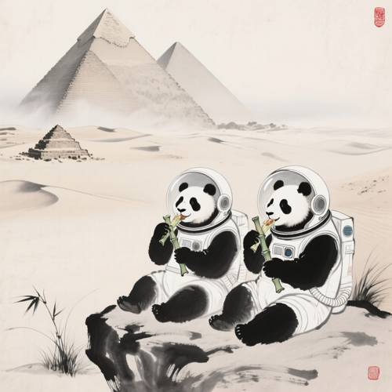
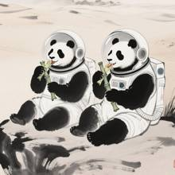

Style — In the style of classical ink painting, against the background of Egyp
In the style of classical ink painting, against the background of Egyptian pyramids, two pandas wearing spacesuits are leisurely tasting bamboo.


Judge — Direct
- FAILStyle — The image is rendered in a style that uses black lines on a sepia-toned background, which has some resemblance to ink work. However, the precise, detailed linework and shading techniques are more characteristic of a modern pen-and-ink illustration or comic art rather than the fluid brushstrokes and wash techniques typical of classical ink painting.
- PASSWorld Knowledge — In the background, set within a desert landscape, there are large, triangular stone structures that are clearly identifiable as Egyptian pyramids.
- PASSAttribute - Quantity — The image clearly depicts two pandas sitting in the foreground. Both pandas are wearing spacesuits and are shown eating bamboo.
Judge — Continuum
- PASSStyle — The image is rendered in a style that mimics classical ink painting. This is evident through the use of visible brushstrokes, particularly on the pandas' fur and the rock they sit on, a muted color palette dominated by black, white, and sepia tones, and the inclusion of red seal stamps in the corners, which are characteristic of traditional East Asian paintings.
- PASSWorld Knowledge — The background of the image features several large, triangular structures set within a vast desert landscape with sand dunes. These structures are clearly identifiable as Egyptian pyramids.
- PASSAttribute - Quantity — The image depicts exactly two pandas in the foreground. They are sitting side-by-side, both wearing white spacesuits with transparent helmets, and each is holding and eating a stalk of bamboo.
What the agent did
Thinking
The user wants an image in the style of traditional ink painting (Chinese ink wash / shuimo), set against a backdrop of Egyptian pyramids, with two pandas in spacesuits casually savoring bamboo. Let me generate this with qwen-image. First I'll build a detailed prompt. Key elements: 1. Classical ink painting style (shuimo / ink wash, monochromatic black ink, brushstrokes, textured xuan paper) 2. Egyptian pyramids in the background 3. Two pandas wearing spacesuits (white spacesuits, helmets) 4. Casually savoring bamboo (holding bamboo, leisurely pose) Interesting juxtaposition: ink painting + spacesuits + pyramids. This is an artistic and whimsical concept. Let me write the prompt. I'll use qwen-image for generation and pass model: "qwen-image". Omit steps and guidance. Size: the default 1024x1024 should be fine, but for an ink painting, a landscape composition might be better — pyramids in the background suggest a landscape. Let me go with something like 1344x768. Actually, the policy says "image size is fixed for comparison, so don't widen the frame" — but at generation time I can choose the initial size. A landscape composition suits the pyramids. Let me go with 1344x768. Hmm, but "don't set a seed. Size and seed are controlled by the harness." — does that mean I shouldn't specify a size either? "Size and seed are controlled by the harness" — this suggests the harness controls the size, and I shouldn't set one either. Let me leave the size at default. Actually, the prompt says "don't widen the frame. Image size is fixed for comparison" — this is about not outpainting. For the initial generation, maybe I should use the default 1024x1024. Hmm, but a landscape composition would be better. The instruction "size and seed are controlled by the harness" suggests I shouldn't override them. Let me leave it at the default. Let me write a detailed generation prompt: "In the style of classical Chinese ink painting (shuimo), rendered in black ink and subtle gray washes on aged xuan rice paper, with loose expressive brushstrokes, large areas of negative space, and faint red seal stamps. In the foreground, two giant pandas wearing white astronaut spacesuits with round glass helmets sit leisurely on a low rock, holding bamboo shoots and chewing, relaxed and unhurried poses. In the background, Egyptian pyramids on a desert dune horizon, rendered in soft ink wash, fading into mist. A few thin ink strokes for dunes, a faint ink-wash sky, sparse reeds or grass strokes near the pandas. Monochromatic, minimalist, elegant classical composition." This is a good prompt. Let me generate. Then inspect, and edit as needed. Let me make the call.
Step 1 — `generate_image`
{
"prompt": "Classical Chinese ink painting (shuimo) style: black ink and soft gray washes on aged xuan rice paper, loose expressive brushstrokes, generous negative space, subtle paper texture, a small red seal stamp in a corner. In the foreground, two giant pandas wearing white astronaut spacesuits with round clear glass helmets sit leisurely on a low rock, holding bamboo shoots and savoring them, relaxed unhurried poses. In the background, Egyptian pyramids on a desert dune horizon rendered in soft fading ink wash, dissolving into mist; a few thin ink strokes suggest sand dunes, sparse grass strokes near the pandas. Monochromatic ink palette, minimalist elegant classical composition.",
"model": "qwen-image"
}Result img_0
Thinking
The result is surprisingly good. Let me evaluate it against the prompt: 1. ✅ Classical ink painting style — yes, ink wash, textured paper, monochrome, red seal stamps (two of them). 2. ✅ Egyptian pyramids in the background — yes, multiple pyramids, one large one, one in the middle ground, and a small one. 3. ✅ Two pandas wearing spacesuits — yes, two pandas in white spacesuits with helmets. 4. ✅ Leisurely eating bamboo — both holding bamboo shoots and eating them, sitting casually. The composition is good. The pandas look charming, and the spacesuits are readable. The ink style is appropriate, with mist, dune brushstrokes, and a grass reed stroke on the left side. Let me look at the details a bit more closely — maybe I should inspect the pandas' faces/hands to check for any unnatural artifacts. I'll inspect the region of the pandas to check whether there are any deformations.
Model
The first generation is very close to the brief. Let me inspect the pandas' faces and hands at full resolution to check for artifacts before deciding whether to edit.
Step 2 — `inspect_region`
{
"image": "img_0",
"roi": [
"the two pandas in spacesuits"
],
"min_size": 700
}Thinking
The roi needs to be passed as a plain string, not as a list. Fixing it.
Step 3 — `inspect_region`
{
"image": "img_0",
"roi": "the two pandas in spacesuits",
"min_size": 700
}Result img_1

Thinking
In the close-up, the panda looks well done: the face is properly done, the spacesuit is clearly readable with helmet, backpack, and chest panel, and each of them is holding a bamboo shoot and eating leisurely. The hands are gripping the bamboo reasonably well (ink brushstroke style, so some roughness is expected and stylistically acceptable). No obvious artifacts — the fingers are rendered as ink-painted mittens, which is consistent with the ink painting aesthetic. The overall image meets all the elements of the prompt: 1. ✅ Classical ink painting style 2. ✅ Egyptian pyramids in the background 3. ✅ Two pandas in spacesuits 4. ✅ Leisurely eating bamboo This is a good result. Mark it as the best and stop. Good enough is the stopping condition — no edits needed.
Model
The close-up confirmed that the image is well-executed: the face of each panda is clean and well-formed, the spacesuit is clearly readable (helmet, backpack, chest panel), the hands are gripping the bamboo in a manner befitting the brushwork, and the poses convey a leisurely, calm mood. All the elements of the prompt are in place: - **Classical ink painting style** — monochrome ink and grey wash, textured paper, dune strokes, mist, red seal stamp - **Egyptian pyramids** — receding into the haze on the desert horizon - **Two pandas in spacesuits** — seated side by side on a rock - **Leisurely savoring bamboo** — each holds a shoot to its mouth, relaxed This matches the brief, so no further editing is needed.
Step 4 — `mark_best`
{
"image": "img_0",
"reason": "All prompt elements present and correct: classical ink-painting rendering, Egyptian pyramids in misty background, two pandas in spacesuits sitting leisurely and savoring bamboo; close-up inspection showed clean faces, readable suits, and no significant artifacts."
}Thinking
Complete. The best image has been marked (img_0, the original generation image). The final action was the mark, and since no edits were performed after that, the mark is valid. Let me wrap this up.
Model
The final image is ready and marked as the best result. It shows the two spacesuit-wearing pandas seated together in the Egyptian desert, savoring bamboo shoots, all rendered in classical ink-painting style — ink washes, paper texture, misty pyramids, and red seal stamps. The marked image (img_0) is the complete version.